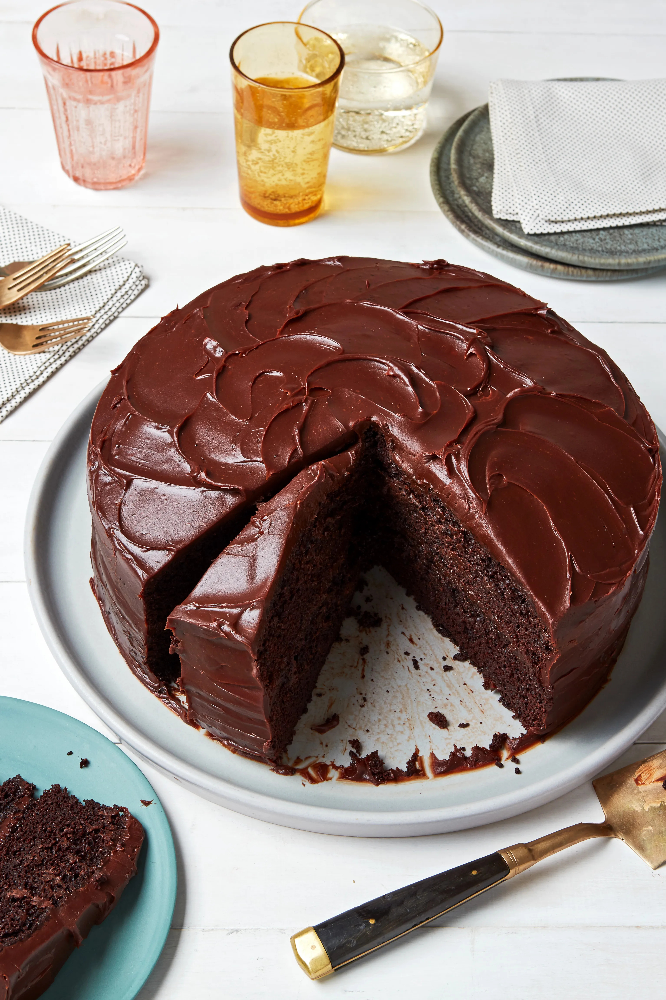
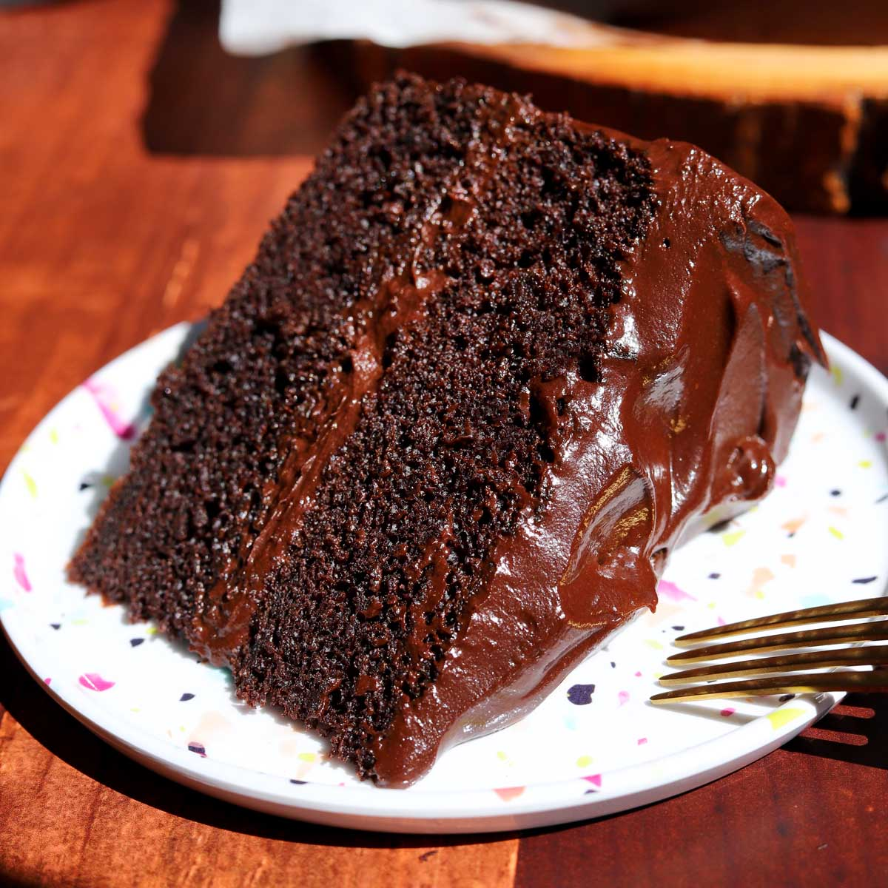
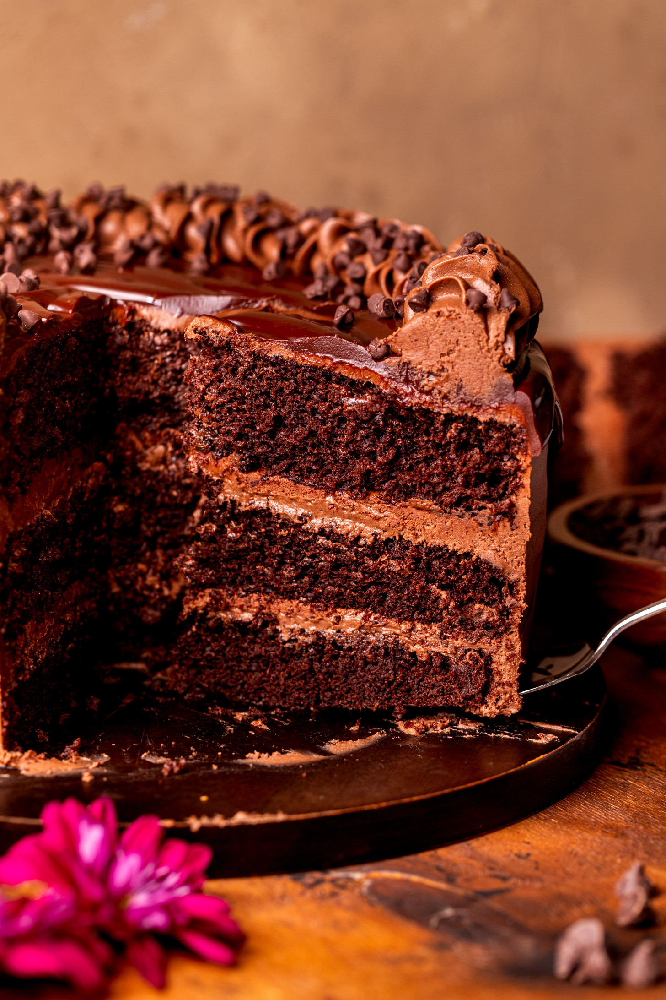

Chocolate Cake




History
Ang Chocolate Cake ay may pinagmulan sa Europe, lalo na noong naging accessible ang cocoa powder noong 19th century matapos ang Industrial Revolution. Sa pagdating nito sa Pilipinas sa pamamagitan ng Western influence, lalo itong niyakap at ginawang bahagi ng mga celebrations tulad ng birthdays at holidays. Sa paglipas ng panahon, nagkaroon ito ng Filipino touch—mas moist, mas rich, at kadalasang mas matamis para swak sa panlasa ng Pinoy. Ngayon, ang Chocolate Cake ay isa sa pinaka-popular na desserts sa bansa, simbolo ng kasiyahan at espesyal na okasyon.
Ingredients & Notes
All-purpose flour
Cocoa powder or melted chocolate
Sugar
Milk
Butter
Eggs
Vanilla extract
Baking powder
Price
₱20